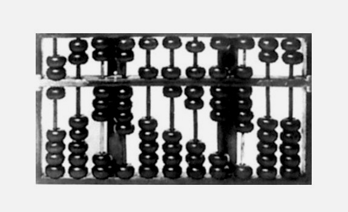

|  | 컴퓨터의 어원은 '계산하다'라는 뜻인 만큼 초창기 컴퓨터의 발전은 계산기로부터 출발했다. 기원 전 사용하던 주판의 형태는 한나라 때 만들어진 현대의 주판 형태로 계속 사용되어 왔다 |
| 그러다 1642년, 아버지의 수고를 덜어주기 위해 파스칼은 톱니를 사용해 셈을 하도록 고안된 형태인 기계식 계산기를 발명했다. |  |
 |
이후 라이프니츠는 곱셈과 나눗셈이 가능 하도록 계산기를 만들었고(1671년), 찰스 배비지는 종이에 구멍을 뚫어 프 로그래밍하는, 오늘날의 컴퓨터와 가장 유사한 장치를 고안했으나 기술적 한계로 실물이 등장하지는 못했다. |
| 전자식 컴퓨터는 전쟁 중에 발명되었습니다. 세계 제2차 대전 당시 독일군의 군사 암호를 해독하기 위해 만들어진 콜로서스 1호는 세계 최초의 프로그래밍 가능한 완전 전자식 컴퓨터였다. |  |
 |
1944년 미국에서도 전자식 컴퓨터 마크1을 만들었는데 기계적 제약 때문에 계산 속도는 그리 빠르지 않았다. |
| 여기까지의 컴퓨터는 계산이나 암호 해독 등의 목적을 가진, 빠른 계산기에 해당한다고 하면 앞으로는 다용도로 사용 가능한 컴퓨터가 등장하게 된다. |  |